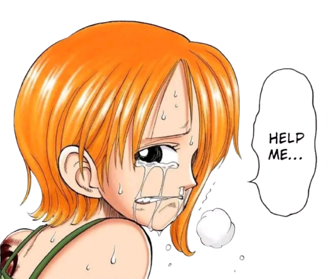

Nami conheceu Monkey D. Luffy no início de sua jornada pelos mares. No começo, ela se juntou ao grupo apenas por interesse, pois precisava de dinheiro para libertar sua vila do domínio de Arlong.
Após descobrir o sofrimento que Nami enfrentava, Luffy e seus companheiros derrotaram Arlong e ajudaram a salvar a vila.
A partir desse momento, Nami decidiu se tornar oficialmente a navegadora dos Piratas do Chapéu de Palha e seguir em busca de seu sonho de desenhar o mapa completo do mundo.